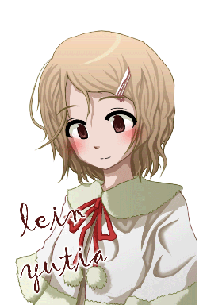

|
キャラ紹介

初月紫苑(xion hazki)
17歳の高校二年生。
いつか異世界に召喚されることを夢見ていた少女。
アトラスに召喚され、レインらと出会い、アルカを学ぶ。
性格は生真面目で内気。地球の友達は少ない。
特技は合気道と剣道。好きなものは蕎麦とニンジン。並乳。
好みのタイプは知的で繊細な年上の男性。花粉症が悩み。

レイン＝ユティア(lein yutia)
16歳の前期アルナ大生。一組のリディア組。
中央アルナ市ネルメス＝リディア通り在住。
地球からやってきた紫苑に命を救われ、アルカを教えるようになる。
性格はおっとりしていて無邪気。恥ずかしがり屋で、友達は少ない。
特技は家事と語学。運動が苦手。好きなものは猫。貧乳。
好みのタイプは優しいお兄さんな男性。幼児体型なのが悩み。

アリア＝イネアート(alia ineaato)
17歳の前期アルナ大生。八組のラルドゥラ組。
中央アルナ市ポエン＝フルミネア通り在住。
レインの同級生で、由緒ある占い師の家系。
性格は見かけに反して豪胆。人をからかうのが趣味。
特技は予知や予言。絵が苦手。酒に強い。豊乳。
好みのタイプは小柄な可愛い女の子。背が高いのが悩み。

アルシェ＝アルテームス(arxe alteems)
25歳の魔法研究所員。専攻は言語学。
中央アルナ市ティーテル＝リディア通り在住。
召喚省の役人ハイン＝アルテームスの息子。
性格は穏やかで紳士的。ＯＢとしてよくアルナ大生の世話を焼いている。
特技はユベール。直情的で、曲ったことが嫌い。
好みのタイプは気丈な子。父親が偉大すぎるのが悩み。
|